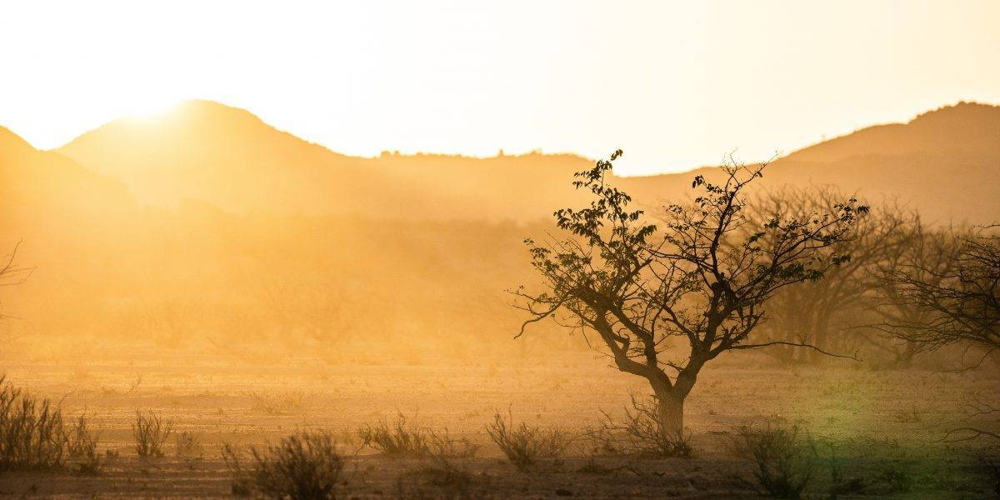
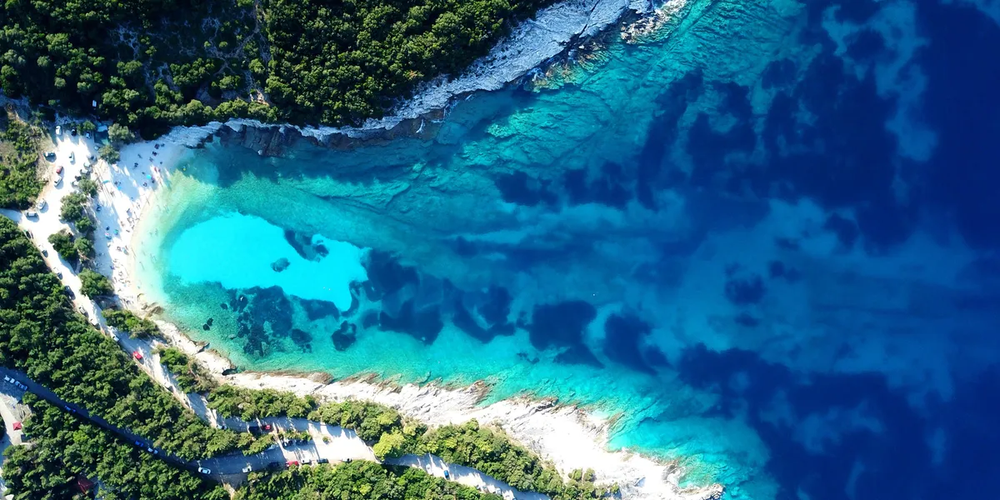

A térítői övben az erős nappali besugázást a derült éjszakán erős kisugárzás követi. Ezért a napi hőingás rendkívül nagy (25-30 °C). Ebben az övben mérik Földünkön a legmagasabb léghőmérsékleti értékeket (50 °C fölött). A szélsőséges értékek zárt medencében, szélcsendes völgyben alakulnak ki.
A sivatagok mozaikosan ugyan, de majdnem minden földrészen megjelennek. A nagy, összefüggő sivatagok kialakulása mindenhol a csapadékhiányhoz (az évente 200 mm-nél kevesebb hulló csapadékhoz) kötődik
| Termesztett növények | Tenyésztett állatok | Gazdálkodási típus |
|---|---|---|
| oázisokban: datolyapálma, gyapot, búza, zöldségfélék, banán, citrom, narancs, mandula |
teve, juh, kecske, szamár | oázisgazdálkodás, nomád pásztorkodás |